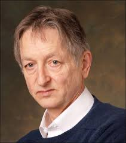
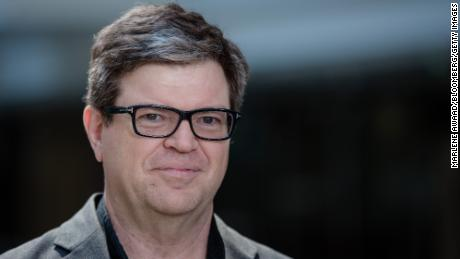
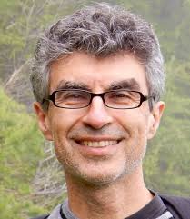

Geoff Hinton, Yann LeCun y Yoshua Bengio ganan el premio ‘Alan Turing’

Yann LeCun, Geoff Hinton y Yoshua Bengio acaban de ganar el premio ‘Alan Turing’, también conocido como el premio Nobel de la computación. Lo más sorprendente es que ninguno de ellos la ganara antes, pues los avances obtenidos por todos son increíbles. Para tener una idea de lo badass que son estos sujetos, veamos un poco de su historia.
Geoff Hinton
El profesor universitario en la NYU, actualmente de 71 años, fue pionero en el desarrollo de las redes neuronales. A finales de la década de los 80, planteó el desarrollo de algoritmos capaces de aprender por sí mismos utilizando una técnica a la que llamó backpropagation. Este método es el estándar y la base para entrenar modelos de Deep Learning hoy en día. Sin embargo, en el momento de su publicación los resultados no fueron satisfactorios, pues Hinton se vio limitado por la tecnología de su época.
Pasarían casi veinte años sin que las redes neuronales recibieran crédito como modelos de aprendizaje eficiente. Esto llegó a su fin cuando, en el año 2012, un equipo formado por Hinton y dos de sus estudiantes ganó la competición anual de reconocimiento de imágenes. Para este logro utilizaron un modelo de Deep Learning que se entrenaba por medio de backpropagation. Ese momento marcó el boom del Deep Learning y estandarizó el uso de redes neuronales para la resolución de complejos problemas de aprendizaje.
Puedes conocer más sobre su vida en en este documental realizado por Bloomberg.
Yann LeCun
LeCun es uno de los investigadores que más admiro a nivel mundial. Sus contribuciones al campo de la inteligencia artificial data desde finales de los 80’s, cuando estaba terminando su doctorado. Por esa época prácticamente inventó el “Hola Mundo” de la inteligencia artificial, el clásico algoritmo de reconocimiento de caracteres escritos a mano. La diferencia clave: utilizó redes neuronales convolucionales para demostrar la usabilidad de este modelo.
Desde entonces, sus contribuciones han variado para abarcar un gran número de áreas. Entre ellas podemos encontrar SVM, gráficos de conocimiento, una gran variedad de modelos de reconocimiento de imágenes, entre otros. Hoy en día es el director de inteligencia artificial en Facebook. Si quieres profundizar más en su trabajo, puedes visitar su interesante página web.
Yoshua Bengio
Bengio fue pionero en el uso de modelos probabilísticos para realizar análisis de secuencias. Su publicación sobre word embeddings es el pilar del procesamiento de lenguaje natural gracias al cual tenemos búsquedas semánticas y reconocimiento de voz. Por medio de esta técnica es posible representar palabras y oraciones de forma numérica, de esta manera se pueden realizar operaciones matemáticas que permitan encontrar similitudes y patrones entre ellas.
Pese a recibir diversas ofertas por parte de grandes compañías, Bengio nunca ha aceptado trabajar en una. Por el contrario, ha fundado varias compañías de investigación y desarrollo de inteligencia artificial sin fines de lucro. Recientemente trabajó en el desarrollo de GAN (redes neuronales adversariales), la mayor revolución en el AI en la historia reciente.
Cuando leí la noticia por primera vez, me pareció extraño que ninguno de ellos hubiera ganado este reconocimiento antes. Definitivamente los tres lo tienen más que merecido. Solo esperemos que puedan tomar unas igualmente merecidas vacaciones eventualmente y que disfruten del millón de dólares del premio. (chicos, sigan investigando)